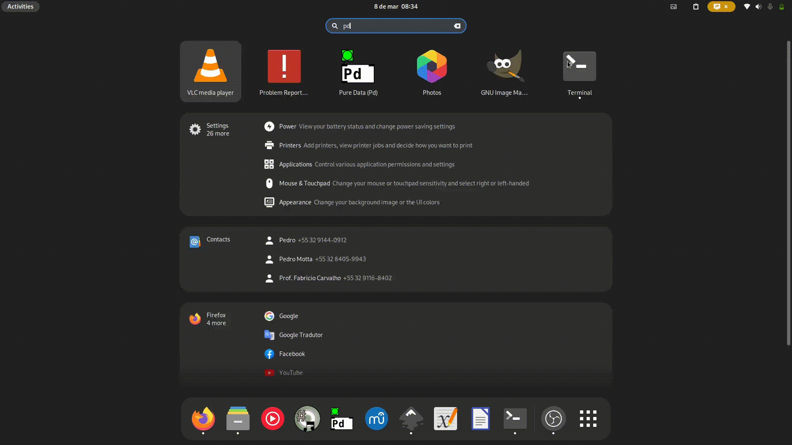

First Install Python
Python Always check if the Python version you install is the right one!
On MacOS you can install Python as an ordinary software.
- Go to Python.org,
- Go to the bottom of the page and download:
macOS 64-bit universal2 installer. - Install it as an ordinary program.
On Windows you can install Python as an ordinary software.
- Go to Python.org,
- Go to the bottom of the page and download:
Windows installer (64-bit). - Install it as an ordinary program.
Be careful of conflicts with numpy installed on the system
Sometimes, if numpy is already installed on your system (with the same version), py4pd may not work. This is a known limitation, and I haven't found a solution for it yet besides uninstall numpy from the system. Be carefull.
On Linux:
- Open the terminal.
- Run:
-
sudo dnf install python3.12 python3-pip -
sudo apt install python3.12 python3-pip -
sudo yay -S python312 python3.pip
-
After Install py4pd
py4pd - Open PureData,
- Go to
Help->Find Externals->, - Search for
py4pd, - Select py4pd and click on
Install:

Extra Info
To use py4pd, besides PureData, you always need to install Python and the package py4pd. I recommend to install Python first then the py4pd package.
Warning
Always use the right version of Python as showed in the table.
| Py4pd Version | Python Version |
|---|---|
1.1.0 |
Python 3.14 |
1.0.0 |
Python 3.13 |
0.9.0 |
Python 3.12 |
0.8.0 |
Python 3.11 |